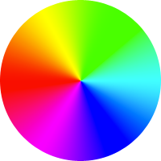
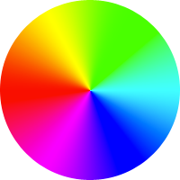

Linear gradients
Basic syntax
Linear gradient angles
left = 0deg
bottom left
bottom = 90deg
bottom right
right = 180deg
top right
top = 270deg
top left
bottom left ≠ 45deg
bottom left
45deg
Color-stop me now
Diagonal stripes
with linear gradients
Diagonal stripes
with repeating gradients
Diagonal stripes
Comparison
With simple linear gradients
- -webkit-gradient() equivalent?
- Easy
- Conciseness
- Verbose
- Ease of changes
- Very hard for angle
- 4 edits for colors
- 2 edits for size
With repeating gradients
- -webkit-gradient() equivalent?
- None
- Conciseness
- Concise
- Ease of changes
- 1 edit for angle
- 2 edits for colors
- 2n-1 edits for size
Easier color changes
More CSS3 patterns

CSS3 patterns
To use or not to use?
- Scalable
- Bad aliasing (sometimes)
- Easily editable from the CSS file
- Verbose CSS code
- Limited browser support
- Easy fallbacks
- SVG might be more philosophically suitable
- Limited possibilities
- Less HTTP requests
- Can be interpolated
- No interpolation support yet
Corner tricks
Beveled corners
Beware of transparent
transparent = rgba(0,0,0,0) = transparent black
 
